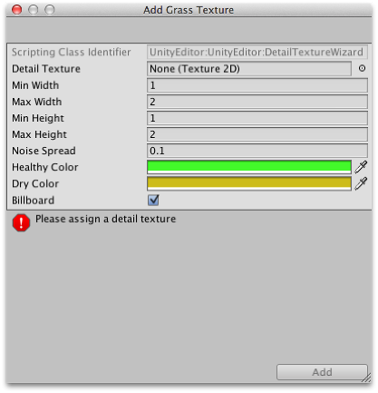
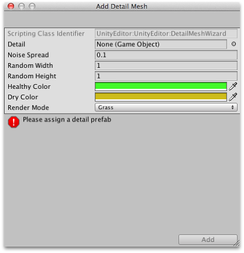

Grass and other details
A terrain can have grass clumps and other small objects such as rocks covering its surface. Grass is rendered by using 2D images to represent the individual clumps while other details are generated from standard meshes.

Enabling details
The details button on the toolbar enables grass/detail painting.
Initially, the terrain has no grass or details available but if you click the Edit Details button in the inspector, you will see the Add Grass Texture and Add Detail Mesh options on the menu that appears. A window will appear to let you choose the assets you want to add to the terrain for painting.
For grass, the window looks like this:

The Detail Texture is the texture that represents the grass. A few suitable textures are included in the Unity Standard Assets downloadable from the Asset Store. You can also create your own. The texture is simply a small image with alpha set to zero for the empty areas. ("Grass" is a generic term, of course - you can use the images to represent flowers, brush and perhaps even artificial objects like barbed wire coils.)
The Min Width, Min Height, Max Width and Max Height values specify the upper and lower limits of the size of the clumps of grass that are generated. For an authentic look, the grass is generated in random "noisy" patterns that have bare patches interspersed with the grass.
The Noise Spread value controls the approximate size of the alternating patches, with higher values indicating more variation within a given area. (Tech note: the noise is actually generated using Perlin noise; the noise spread refers to the scaling applied between the x,y position on the terrain and the noise image.) The alternating patches of grass are considered more "healthy" at the centres than at the edges and the Healthy/Dry Color settings show the health of grass clumps by their color.
Finally, when the Billboard option is enabled, the grass images will rotate so that they always face the camera. This option can be useful when you want to show a dense field of grass because there is no possibility of seeing clumps side-on and therefore visibly two-dimensional. However, with sparse grass, the rotations of individual clumps can become apparent, creating a strange effect.
For detail meshes, such as rocks, the selection window looks like this:-

The Detail property is used to select a prefab from your project which will be scaled by the Random Width and Random Height values for individual instances. The Noise Spread and Healthy/Dry Color values work the same as they do for grass (although the concept of "healthy" is stretched somewhat when applied to objects like rocks!) The Render Mode can be set to Grass or Vertex Lit. In Grass Mode, the instances of detail objects in the scene will be flattened into 2D images that behave like the grass textures. In Vertex Lit mode, the details will be rendered as solid, vertex lit objects in the scene.